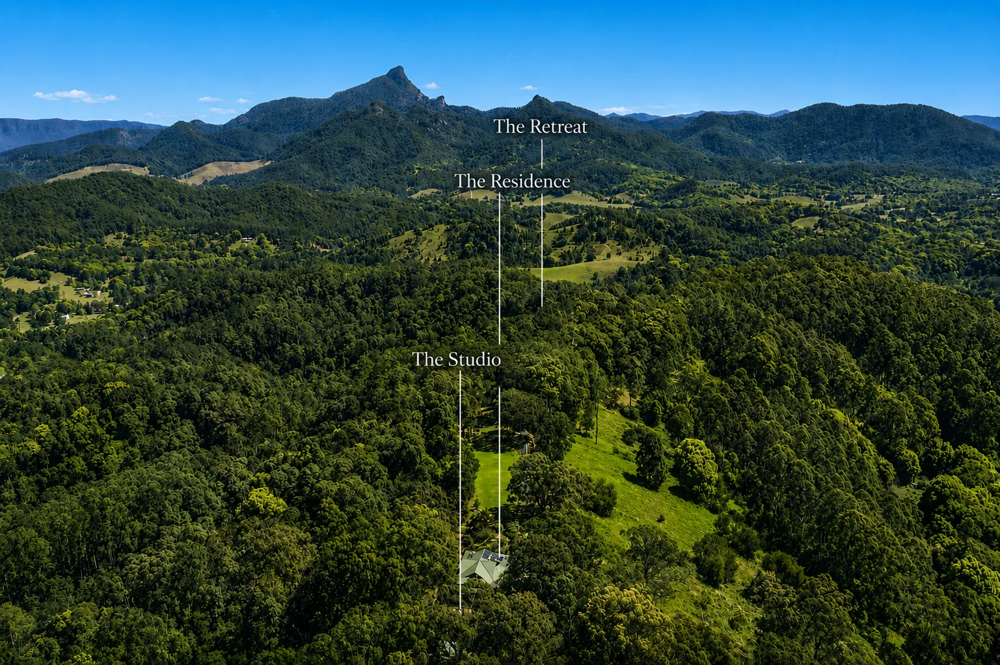

Future Chapters
Endless possibilities.
Why Serra Luma
The Next Chapter
The best estates are not acquired simply for what stands today. They are acquired for the possibilities they create.
Set across 134 acres of Northern Rivers hinterland, Serra Luma offers a rare combination of privacy, natural beauty and future potential.
Approximately 400 metres from the residence, a secluded multi-acre ridgeline clearing presents a rare opportunity to imagine what lies ahead.
Its greatest chapter has yet to be written.

Chapter One
Family Estate
There is something increasingly rare about having enough space for the people you love.
Space for children to build cubbies in the forest, swim in the creek and roam beyond the boundaries of a suburban backyard. Space for friends to stay the weekend. Space for grandparents, celebrations and traditions yet to be created.
At Serra Luma, life expands. Family gathers. Memories deepen.
What begins as a home becomes a place woven into the story of generations.

Chapter Two
Self-Reliant Sanctuary
In a world that feels increasingly fast, crowded and uncertain, there is a growing desire to live differently.
For some, luxury is no longer defined by convenience. It is defined by space, self-reliance and the freedom to live on one's own terms.
With abundant water, productive land, established infrastructure and extraordinary privacy, Serra Luma offers the foundations for a life of greater independence and resilience. A place where food can be grown, resources carefully stewarded and daily life shaped more by the rhythms of nature than the demands of the outside world.
Not an escape from life, but a return to what sustains it.

Chapter Three
Wellness Retreat
There are few places where nature does so much of the work.
The sound of water moving through the landscape. The canopy of native forest. The stillness that settles across the property as the day draws to a close.
Whether envisioned as a private sanctuary, a place of healing, or a destination for meaningful retreat, Serra Luma offers an environment that encourages people to slow down, reconnect and restore.
The land already holds the peace. It awaits only the vision.

Chapter Four
Creative Haven
Some places demand attention. Others create the space to listen.
Morning light filters through timber and glass. The landscape shifts with the seasons, the weather and the passing hours. Ideas arrive more easily here.
For writers, artists, musicians and makers, Serra Luma offers both inspiration and solitude. The separate studio provides a dedicated space to create, while the wider estate offers endless opportunities to wander, reflect and reconnect with the creative process.
Some places shelter creativity. Others awaken it.

Chapter Five
Regenerative Holding
The greatest rural estates are not defined by what they produce, but by what they protect.
Spanning 134 acres of diverse and beautiful landscape, Serra Luma offers the opportunity to restore, regenerate and care for a remarkable piece of the Northern Rivers.
Here, success is measured in healthy waterways, thriving wildlife, flourishing ecosystems and a lasting connection to the land itself.
A holding to be tended with intention and passed on better than it was found.

Chapter Six
Nature-Based Retreat
The most memorable destinations are defined not by what is built, but by where they are found.
Positioned within easy reach of Byron Bay, the Gold Coast and the wider Northern Rivers region, Serra Luma offers a rare combination of privacy, scale and natural beauty. Hidden among rolling hills, native forest and expansive views, it is a place that feels both deeply connected and wonderfully removed from the outside world.
For those with a vision for boutique eco-tourism, wellness accommodation or immersive nature-based experiences, this remarkable landscape provides an exceptional foundation.
A destination waiting to be imagined, subject to relevant approvals.
Some will see a remarkable home.
Others will see a place to gather family, create, heal, regenerate land, build community or simply live more intentionally.
The opportunity is not defined by what Serra Luma is today, but by what it may become in the hands of its next custodian.
Which future will you write?
Request the Information Memorandum to explore the possibilities in more detail.